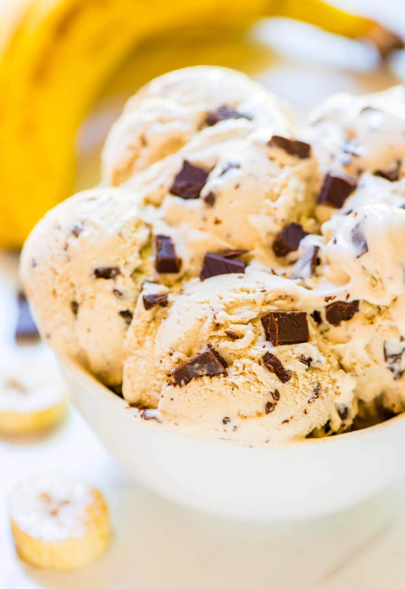

BaNaNa IcE CrEaM

Super Simple Banana Ice Cream
This super easy Banana Ice Cream is a great way to cool off on a hot day with only a few ingredients.
Ingredients
- 3 frozen bananas
- 1/2 cup full fat coconut milk
Possible Add Ins:
- chocolate chips
- peanut butter
- strawberries or other fruit
- almonds or other nuts/seeds
Steps
- blend frozen bananas with coconut milk, long enough to blend but not too long so the bananas don't heat up too much
- add any desired add ins
- put into container and freeze for at least 1 hour
- enjoy!